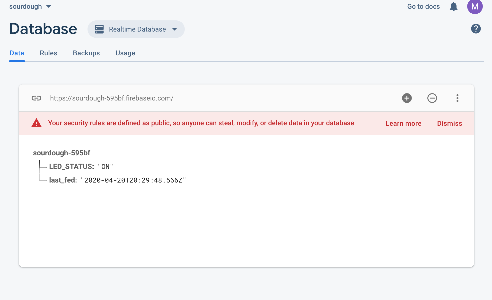
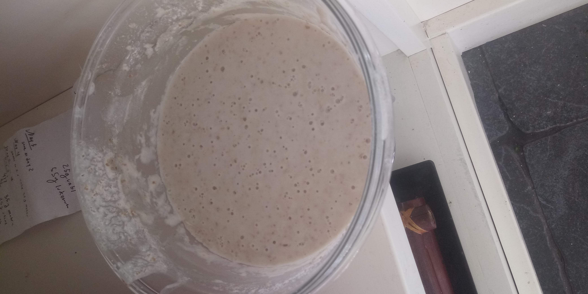
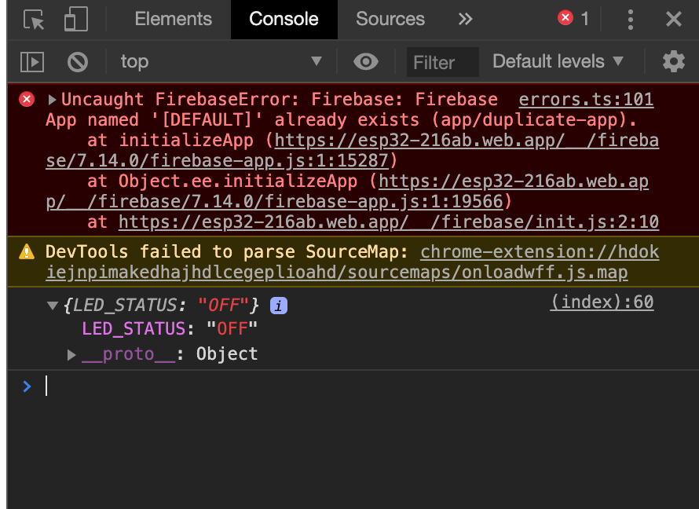

This week, I really wanted to get the Firebase Realtime Database working, since I knew I wanted to use it in my final project. I ran into a lot of problems getting it to work, however, as I've catalogued below.
A problem that I kept running into was that the rules of my database kept automatically changing away from the simple true, true that it needed to be in so that I could access it without using authentification. This also ended up being the final error, but it was easy to diagnose thanks to the JS console (which I also discovered this week!) I've attached my code below:
PS70
I also had some confusion as to how to initialize the firebase, make sure the right json files were in my folder, and get the 'public' folder intialized correctly, but by following a couple google tutorials cobbled together, I finally got something functioning. I also probably call too many firebase features at the beginning, and probably the same ones several times, but it magically works and I don't want to upset whatever balance my code has found...
Onto my project of the week! I wanted to make a way to track my sourdough starter (which I decided to begin because of quarantine....). I kept forgetting to feed it, or what to feed it, and what the weight and stuff was, and I wanted an easy way to keep track of it all. My idea was to make a web page and a simple database that would keep track of the last time the sourdough was fed. The web page would then tell me how long it's been since I fed it, and what to feed it (weight amts and all) while there would be a simple circuit next to the sourdough starter with an LED. The light would go on when it's been 20 hours since the last feeding, and then from the website you can say when you've fed it. This way, when my sister feeds the sourdough, I will know (since the light won't go on, and I can also check the website!)
I had some difficulties trying to figure out how to implement a time delay, and eventually decided that I would just have the light turn on if, when the webpage was opened, the time had been greater than 20 hours. There would also be a button so that you could check the time.
I started by trying to get the LED code to display the light status, which was a little difficult since I haven't ever used JS before - I think I might try to find a way to use Python for my final project, since I'm a lot more familiar with it. Here is that code:
PS70
I then dove headfirst into doing the same for my sourdough. Here is that code:
PS70
The sourdough was last fed
Here is what that database looked like:
And here is a video of it working!
And in case anyone was wondering what my sourdough looked like....
Also btw I kept getting a weird error but I just ignored it and it worked out fine...
